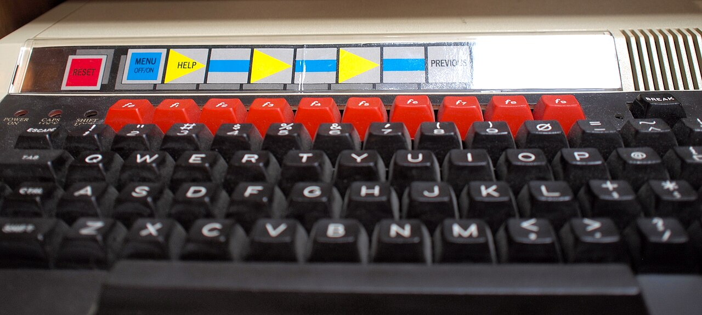

BBC Domesday Project
A million contributors, two laserdiscs, a trackball and 16 function keys — the pre-Web national point-and-click information system that became unreadable within 15 years

Overview
The BBC Domesday Project was a national interactive multimedia system launched in November 1986 by the BBC to mark the 900th anniversary of the original 1086 Domesday Book. Conceived in 1983 by BBC Television producer Peter Armstrong, it put two custom 12-inch LV-ROM (LaserVision Read-Only Memory) laserdiscs — carrying 54,000 still-frame video images plus ~300 MB of digital data per side — into a hardware stack comprising a BBC Master AIV computer, a Philips VP415 laserdisc player with internal genlock and video-mixing board, a Marconi RB2 trackball, and a printed function-key overlay strip with 16 labelled navigation keys. The VP415 was developed specifically for the project by Philips over a 2-year design process at their Laservision factory in Blackburn, England; it genlocked the player to the computer (the unusual direction) to avoid modifying school BBC Micros. The application software was written in BCPL by Logica.
The Community Disc carried a UK map browser based on 24,000 4 km × 3 km blocks from Ordnance Survey 1:50,000 series, each block holding up to 3 photographs and 20 pages of 40-column text contributed by a school. The disc was double-sided (Lancashire/Yorkshire division — users flipped the disc to cross); over 1 million people and ~9,000 schools crowd-contributed content. The National Disc carried a topic hierarchy (Society / Economy / Culture / Environment, each with ~11 subcategories) with natural-language search via Martin Porter's parsing system (the Porter Stemming Algorithm), plus a Bosch FGS-4000-rendered 'Landscape of Knowledge' virtual art gallery acting as a visual index — click paintings on the walls to reach photo sets, walk through doorways into 9 'surrogate walks' (early non-immersive VR walks through a farm, a Barrett show house, etc.). Side 2 of the National Disc held 7 full-motion video clips of 1980–86 news/sport (Falklands, miners' strike, Charles & Diana wedding, Commonwealth Games).
Fewer than 2,000 systems sold by early 1988 (Wikipedia, Acorn User May 1988). Cost was ~£5,000–5,200 per complete system (the price of a small family car); a voucher scheme reduced it to £3,000. By 2002 the Observer ran the famous headline 'Digital Domesday Book lasts 15 years not 1000' — the playback system had become unreadable, the LV-ROM format was proprietary with no public reader, and the BBC Micro platform itself had aged out. Recovery took a multi-decade, multi-institution effort: CAMiLEON (Leeds + Michigan, 2002–03, emulation approach), Andy Finney's 2003 videotape-digitization at BBC R&D (the original 1-inch C-format master tapes were largely intact), Adrian Pearce's domesday1986.com (2004–08, hosted by the National Archives), BBC Learning's Domesday Reloaded (May 2011–June 2018, ~25,000 photos + ~150,000 pages of text recovered), and the open-hardware Domesday86 project (2020+, the 'Domesday Duplicator' lets anyone read LV-ROM discs without rare original hardware). Working systems are on public display at the Centre for Computing History (Cambridge) and The National Museum of Computing (Bletchley Park).
Deep dive
The project was conceived in 1983 by BBC Television producer Peter Armstrong, who wondered if it would be possible to harness the Domesday philosophy to modern Britain (per Andy Finney's primary-source account at atsf.co.uk/dottext/domesday.html). Co-founder Andy Finney produced the 'surrogate walks' and later led the 2003 video preservation for the Public Record Office. The BBC team was based at Bilton House, West Eunding. Mike Tibbets was deputy editor (software). Application software was written in BCPL — a precursor to C, chosen for portability — by Logica. Pre-mastering was done on a VAX-11/750 assisted by BBC Micros. Funding came from the BBC and the European Commission's ESPRIT programme. Acorn Computers supplied Master hardware, MOS extensions, Econet, the SCSI card, and the VFS (Videodisc Filing System) ROM. Philips developed the VP415 player and LV-ROM format, and handled disc mastering/replication at their Blackburn factory. The BBC took over Domesday retrieval software from Acorn after Acorn's 1985 financial crisis.
The Domesday Project is a 1986 pre-Web point-and-click GUI built on a genlocked laserdisc/computer overlay — distinct from any game-oriented system. The player uses a Marconi RB2 trackerball (rebranded by Acorn; chosen over a mouse because it 'could be fixed to a table' and was deemed 'more suitable for libraries and schools', per Finney) plus the BBC Master keyboard with a printed function-key overlay strip carrying 16 labelled navigation keys (Walk, Find, Photo, Data, Video, Index, etc.). The user boots to a UK map (Ordnance Survey 1:50,000 series, full national coverage); moves the trackball to pan; the country is divided into 24,000 blocks of 4 km × 3 km based on OS grid references. Each block could hold up to 3 photos + 20 pages of 40-column text contributed by a school. The Gazetteer supports place-name lookup. The user can measure distances and areas on maps. The BBC Micro 'was not designed to have a point-and-click environment, but it could be programmed to use one' (Finney) — this was a genuine point-and-click GUI in 1986, before the World Wide Web. An optional touchscreen variant existed; some users set up touchscreens but the trackball was the default.
The BBC Master AIV (Acorn Interactive Video) is a standard BBC Master 128 expanded with: (a) a SCSI card in the modem slot, (b) the VFS ROM, (c) the 65C102 'Turbo' co-processor (4 MHz 6502 second processor communicating via Acorn's 'Tube' bus). 128 KB RAM. The Philips VP415 ('The Domesday Player') is a modified LaserVision player with internal genlock, an internal video-mixing board, an optimized PAL→RGB decoder (sharp 5 MHz still-frame image vs. the ~3 MHz of conventional players — important for map legibility), and a data channel carrying 6 KB per video frame interleaved with Reed-Solomon-style error protection, all SCSI-accessible. The LV-ROM disc format stores 54,000 image frames per side (≈36 min at 25 fps) plus ~300–324 MB of digital data per side in place of the audio channels using Acorn's Advanced Disc Filing System. The laserdisc↔BBC Master interface is SCSI (primary) — the LV-ROM article calls Domesday 'one of the first non-professional computing platforms to incorporate the emerging SCSI-1 parallel bus standard.' RS-232 was an alternative control path but disabled once SCSI was active. The combined computer/video output is via RGB/SCART only; the VP415's video-mixing board supports hard-key (computer graphic replaces disc video where non-black), translucent bleed (disc shows through graphic — used for plotting data over maps), and highlight dim (disc darkened where computer output is black) modes.
Over 1 million people participated (per Finney and Wikipedia); ~9,000 schools contributed (Wikipedia / New Scientist 1985); up to 13,000 schools showed interest but coverage skewed urban, so the team reached out to Women's Institute, Scout/Guide Associations, and farmers for rural gaps. A Welsh-language dispute: BBC initially allowed only English text; compromised on 10 Welsh + 10 English pages per school, which some Welsh schools saw as halving their allocation — a fascinating early case study in crowdsourcing-platform language politics.
Cost was the immediate barrier (~£5,000–5,200 per system; 'over twice what the project believed they were to cost when we started', per Finney). Obsolescence was the long-term killer: the Philips VP415 became unobtainable as Philips moved on; the LV-ROM format was proprietary with no public reader; the genlock overlay architecture was hard to emulate (still images were stored as single-frame analog video overlaid by the computer GUI, predating JPEG 1992 and truecolor cards); and the BBC Micro platform itself aged out. By 2002 the Observer ran the famous headline 'Digital Domesday Book lasts 15 years not 1000' — though Finney notes the analogue AV content itself was fine; it was the playback system that died. Recovery was multi-stage: CAMiLEON (2002–03, University of Leeds + University of Michigan, Margaret Hedstrom / Paul Wheatley; emulation approach via SCSI→Linux capture of data, video capture of stills, modified BeebEm emulator); Finney's 2003 videotape digitization (1-inch C-format master tapes via BBC R&D's 'Transform Decoder' by Jim Easterbrook to Digital Betacam via D3 intermediate); Domesday 1986 (2004–08, Adrian Pearce reverse-engineered the Community Disc → Windows PC, hosted at domesday1986.com by the National Archives — site went offline early 2008 when Pearce died suddenly); Domesday Reloaded (May 2011–June 2018, BBC Learning team headed by George Auckland, ~25,000 photos + ~150,000 pages of text extracted by Simon Guerrero & Eric Freeman, launched with Archive on 4 radio programme May 14 2011, touch-table version installed at the National Computing Museum Bletchley Park December 2011 — site went offline June 2018; archived at the UK National Archives); Domesday86 (2020+, Chris Vincent et al., open-hardware 'Domesday Duplicator' for reading LV-ROM discs without rare original hardware, free/open licenses).
The Domesday Project is the only candidate artifact that is a general-purpose national reference/information system rather than a game console — its GUI interaction model (trackball + labelled function keys, pan/zoom map navigation, natural-language search, click-through virtual gallery) is a 1986 pre-Web point-and-click interface built on a genlocked laserdisc/computer overlay, distinct from RDI Halcyon's laserdisc-game model, Bandai Terebikko's VHS quiz format, or Action Max's VHS light-gun shooter. Its national-scale crowdsourcing (1M+ contributors, ~9,000–13,000 schools) and its status as the canonical digital-obsolescence parable (unreadable within 15 years, recovered only by a multi-decade, multi-institution effort) give it a singular cultural-HCI story no other artifact in the collection matches. It fills the 'interactive laserdisc system as general-purpose reference interface' gap cleanly.
Team & pioneers
- Peter Armstrong. BBC Television producer; project head. Conceived the project in 1983. BAFTA recognition.
- Andy Finney. Project co-founder; produced the 'surrogate walks'; led 2003 video preservation for the Public Record Office. Author of the primary-source website atsf.co.uk/dottext/domesday.html.
- Mike Tibbets. Deputy editor, software.
- Logica. Application software in BCPL (precursor to C, chosen for portability).
- Acorn Computers. Supplied Master hardware, MOS extensions, Econet, SCSI card, VFS ROM. Set up 'Acorn Video' subsidiary for the broader IV market. BBC took over Domesday retrieval software from Acorn after Acorn's 1985 financial crisis.
- Philips. VP415 player development, LV-ROM format co-development, disc mastering/replication at the Laservision factory in Blackburn, England.
- BBC + ESPRIT (European Commission). Funding partners.
- 1 million+ crowd contributors (~9,000 schools). Photographs, text entries, and field work contributed by schoolchildren, Women's Institute, Scout/Guide Associations, and farmers.
- Marconi RB2 Trackerball. The trackball input device, rebranded by Acorn. Chosen over a mouse because it 'could be fixed to a table' and was deemed 'more suitable for libraries and schools'.
Media

Sources
- Andy Finney (project co-founder), primary-source website: 'The BBC Domesday Project — November 1986'
- Wikipedia: BBC Domesday Project
- Wikipedia: LV-ROM (hardware/format details, SCSI-1 claim)
- Wikipedia: BBC Domesday Reloaded (2011–18 recovery)
- Domesday86 project (modern open-hardware preservation; Domesday Duplicator)
- Philips VP415 Operating Instructions (PDF, 1986)
- Centre for Computing History: BBC Domesday Preservation Project (online emulator)
- Rhind & Openshaw (1986): 'The BBC Domesday Project: a nation-wide CIS for $4448' (technical report)
- The Guardian / Observer, 3 March 2002: 'Digital Domesday Book lasts 15 years not 1000'
- Tim Harford, Cautionary Tales podcast (Nov 2023): 'Laser Versus Parchment'
- Wikimedia Commons: Category:BBC Domesday Project (9 CC-licensed photos by Simon Inns & Paul Downey)